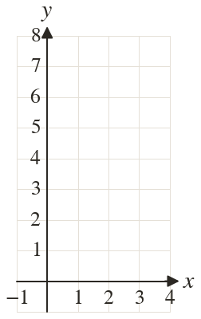
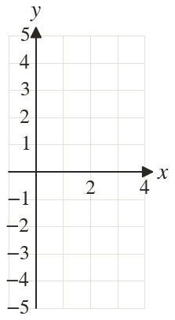
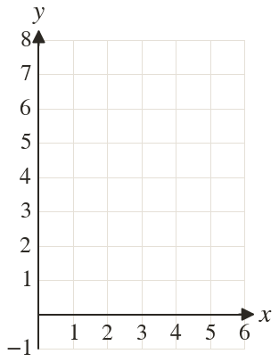
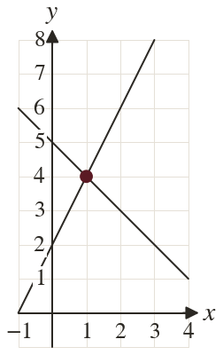
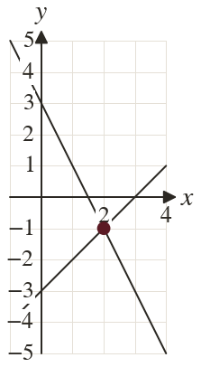
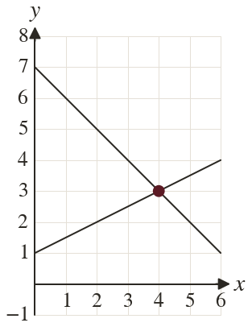

Westonbirt Maths · Simultaneous Equations and Graphs
Graphical Solutions
Name: ______________________ Date: ____________
1
Solve and graphically.
2
Solve and graphically.
3
Solve and graphically.
4
How many solutions do and have? Explain.
5
How many solutions do and have? Explain.
Ext
The lines and cross between grid lines. Find the crossing point. Why might a graph only give an estimate?





